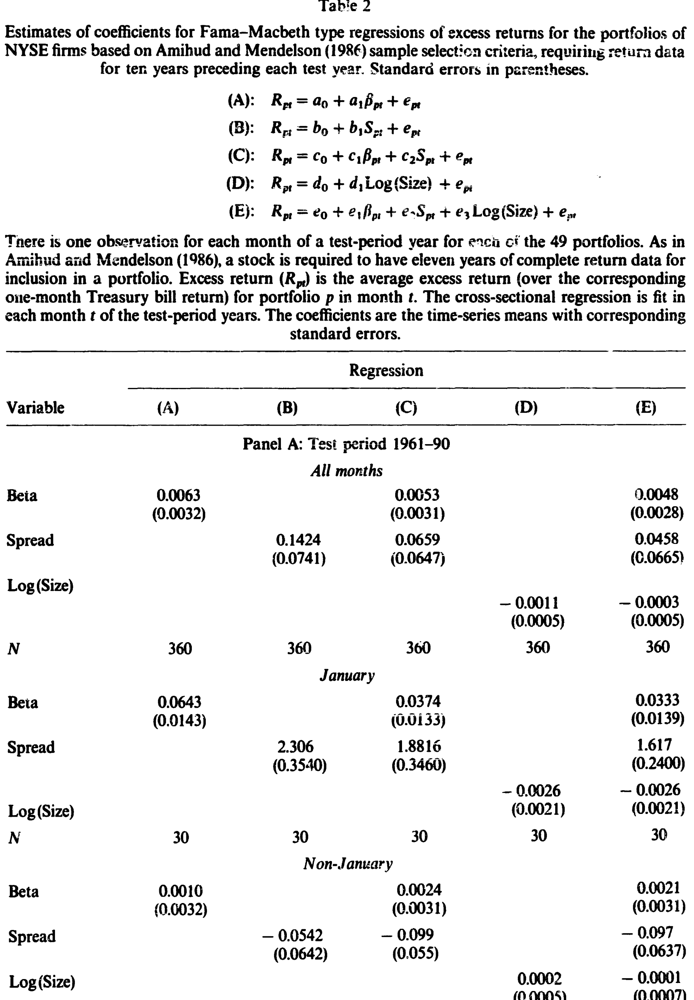
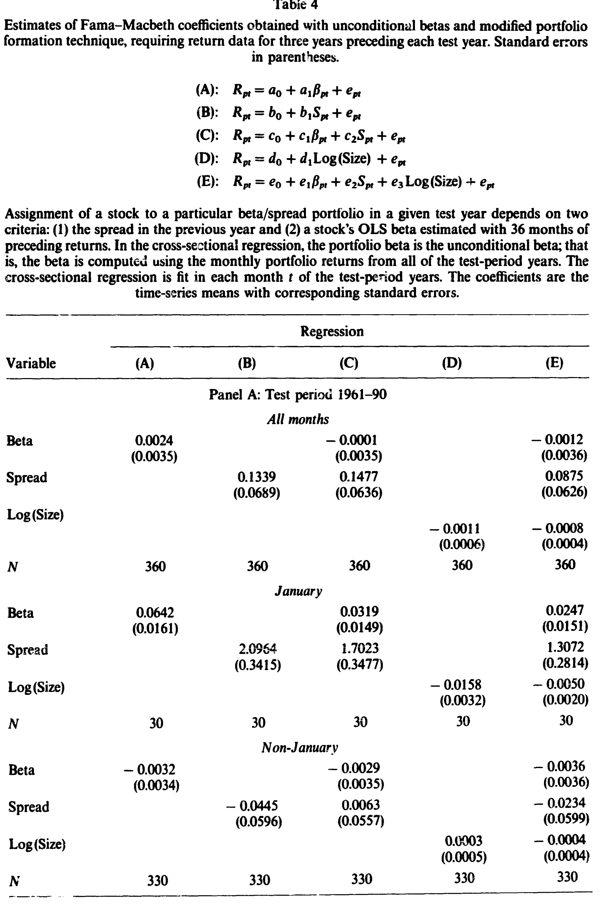
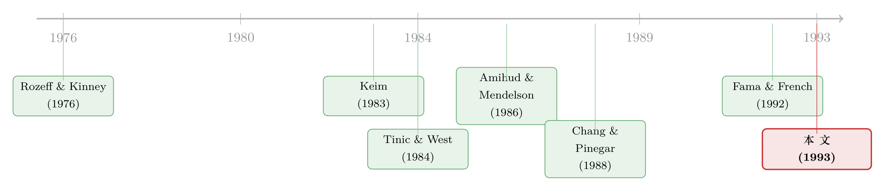

流动性溢价，原来只在一月里兑现
本文读的是 Eleswarapu & Reinganum (1993, Journal of Financial Economics)：他们把 Amihud-Mendelson 的「买卖价差被定价」假说放到逐月的横截面里重新检验，结果发现所谓的 流动性溢价 (liquidity premium) 在 1961–1990 年间只有在一月份才可靠地为正；非一月份的月份里，买卖价差对收益的影响在统计上与零无异。更进一步，一旦放宽样本选取标准，规模效应 (size effect) 重新现身——而这恰恰是原研究里「消失」了的东西。
1 引言：一个被「平均」掩盖的故事
市场微观结构与资产定价之间，本来隔着一道墙。一边是研究做市商如何报价、买卖价差如何形成的人；另一边是研究股票为什么有这样那样的预期收益的人。Amihud 和 Mendelson 在 1986 年的那篇经典论文，第一次把这道墙凿开了一个洞：他们论证，理性投资者会要求为持有「难卖」的股票得到补偿，于是买卖价差越大的股票，预期收益越高、公司价值越低。这就是所谓的 流动性溢价。他们用 1961–1980 年纽交所 (NYSE) 股票组合做了实证检验，发现组合的年收益率确实与买卖价差正相关。（关于这条逻辑的来龙去脉，可参见《价差是真的，成本却是假的——逆向选择究竟从哪里抬高了「要求回报」》。）
这是一个漂亮的结果，漂亮到几乎成了定论。
但漂亮的结果往往藏着一个没人追问的细节。Amihud 和 Mendelson 的检验，用的是把整段时间序列「汇集」(pooled) 到一起的方法——把三十年里所有月份的数据捏成一个回归。这样做有个代价：它假定那条「价差—收益」的关系在一年十二个月里是同一回事。可万一不是呢？万一这条关系在某些月份很强、在另一些月份根本不存在呢？汇集回归会把这种季节差异碾平成一个看似温和的「平均」正系数，而你永远不会知道，这个平均数背后其实是一个月在扛着另外十一个月。
本文要做的，正是把这块被平均掉的拼图重新拆开。
2 为什么偏偏要怀疑「一月」
提出「一月」并不是凭空的灵感。在这篇文章问世之前，金融学界关于一月份的反常现象已经积累了一长串证据。Rozeff 和 Kinney (1976) 最早记录了股票收益的日历季节性；Keim (1983)、Reinganum (1983)、Roll (1983) 则把小公司的超额收益几乎全部锁定在了一月份——著名的「一月效应」。更要命的是，Tinic 和 West (1984, 1986) 发现，资本资产定价模型里的 beta 风险，也只在一月份被定价；Chang 和 Pinegar (1988) 进一步报告，市场组合相对国库券的超额收益，可靠地大于零的，同样只有一月。
于是一个自然的问题浮出水面：既然 beta 风险、规模、市场溢价统统在一月份「集中爆发」，那么流动性溢价，会不会也是同一出戏里的角色？
这就是本文的核心追问。它把 Amihud-Mendelson 的命题切成两半来问：第一，价差与收益的关系，在一月和非一月份是否不同？第二，A&M 那套相当严苛的组合选取标准，会不会本身就制造了一个误导性的结论？
3 数据与组合构造
先把舞台搭起来。
样本是 1961–1990 年的纽交所股票，月度收益来自 CRSP。相对买卖价差 (relative spread) 的定义沿用 A&M：某股票的价差除以买价与卖价的均值；股票 i 在第 n 年的价差 S_in，取的是上一年 n-1 年初与年末相对价差的平均。1960–1979 年的价差数据来自 Stoll 和 Whaley (1983)，1980–1989 年则取自 Fitch Investors Service。
组合是这样形成的。A&M 的原始做法要求一只股票有整整十一年的完整收益数据才能入选。在头五年里用市场模型估计个股 beta：
$$ R_{it} = a_i + b_i R_{mt} + e_{it}, \qquad t = 1, \dots, 60 $$
这里 R_it 与 R_mt 是股票 i 与市场指数在第 t 个月相对一个月期国库券的超额收益。沿用 A&M 与 Fama-MacBeth (1973) 的传统，市场指数取所有纽交所股票的等权组合。然后按上一年的价差把股票排成七组，每组再按 beta 分成七个子组，于是得到 49 个测试组合。每个测试年里入选的公司数在 654 到 929 之间。
这套 49 组合的描述性统计本身就透露了玄机：组合的平均相对价差从 0.454% 一路排到 3.530%，平均 beta 在 0.517 到 1.470 之间，而平均市值则从 5500 万美元横跨到 73.28 亿美元。价差、beta、市值三者并不独立——低价差的股票往往也是低 beta 的大公司。这种纠缠，正是后面识别「到底是谁在被定价」时必须小心处理的地方。
4 识别策略：从汇集回归到逐月横截面
这里是全文方法论上真正关键的一步。
Chen 和 Kan (1989) 对 A&M 的汇集时间序列—横截面方法提出了尖锐批评：这种方法把市场风险溢价约束成在三十年里恒定不变，而这种约束本身可能「制造」出一个虚假的价差效应。他们建议改用 Fama 和 MacBeth (1973) 的逐月横截面回归。本文采纳了这个建议——文中报告的，只有这种逐月横截面回归的结果。
具体地说，对 49 个组合，每个月都跑一次横截面回归，自变量是 beta、价差、规模；然后把每个月得到的回归系数,沿时间序列求平均，并据此算标准误。论文一共估了五个设定：
$$ \text{(A)}: \; R_p = a_0 + a_1 \beta_p + e_{pt} $$
$$ \text{(B)}: \; R_p = b_0 + b_1 S_p + e_{pt} $$
$$ \text{(C)}: \; R_p = c_0 + c_1 \beta_p + c_2 S_p + e_{pt} $$
$$ \text{(D)}: \; R_p = d_0 + d_1 \log(\text{Size}) + e_{pt} $$
$$ \text{(E)}: \; R_p = e_0 + e_1 \beta_p + e_2 S_p + e_3 \log(\text{Size}) + e_{pt} $$
这套设计的好处在于，它把「全年平均」拆成了一个个独立的月度快照。你可以单独把一月份的 30 个观测拎出来求平均，也可以把其余 330 个非一月份观测拎出来——同一套数据，两种完全不同的故事，第一次被分开称重。
在正式回归之前，论文先给了一张直观到「戏剧性」的图：把 49 个组合的平均收益按价差和 beta 排开，一月份里，从低价差走向高价差，平均收益拾级而上——这正是流动性溢价该有的样子；可在非一月份，这条线几乎完全是平的。
5 主要结果：一月独大
把图变成数字，结论就硬了。
先看 A&M 的原始组合构造（1961–1990 全期，见表 2）。当所有月份混在一起时，价差系数在仅含价差的设定 (B) 里是 0.1424（标准误 0.0741），看似为正；可一旦加入 beta，它跌到 0.0659（0.0647），再加入规模，0.0458（0.0665）——不到两个标准误，统计上与零无异。
但把一月份单独拎出来，画风骤变。价差系数在设定 (B) 里高达 2.306（0.3540），在三变量设定 (E) 里仍有 1.617（0.2400）；beta 系数在一月份是 0.0643（0.0143），同样可靠为正。也就是说，一月份里 beta 和价差都被定价了。

Table 2
那非一月份呢？价差系数的点估计统统是负的：设定 (B) 里是 -0.0542（0.0642），加上 beta 后 -0.099（0.055）——虽然都在两个标准误以内，但没有任何一个非一月份的溢价估计可靠地不同于零。一句话：用 A&M 的样本标准，流动性溢价在 1961–1990 年间只在一月份可靠为正。
到这里，第一个追问有了答案。接着，一个自然的问题是：A&M 那套「十一年完整数据」的严苛门槛，会不会本身就扭曲了结论？
6 反转：被严苛门槛挡在门外的「规模」
这正是第二个核心追问，也是本文最有意思的反转。
要求一只股票必须有十一年的连续数据才能入选，会系统性地把年轻的、小的公司剔除出去——它们要么还没上够十一年，要么中途退市了。如果规模效应真实存在，这种筛选恰恰会让你找不到它。A&M 当年正是据此得出「规模不重要，价差才重要」的推论。
于是本文换了一套更宽松的组合构造：只要求三年的预成形数据，beta 用前 36 个月的 OLS 估计；而且，关键的是，允许公司在测试年中途退市，从而避免幸存者偏差 (survivorship bias)。这一改，入选公司数暴涨——平均每年从 795 家增加 45% 到 1153 家，新样本里公司的平均市值比原来小了 16%。
结果如何？看表 4（1961–1990 全期）。流动性溢价「只在一月份出现」这条基本结论依然成立：一月份价差系数 2.0964（0.3415）到三变量下的 1.3072（0.2814），非一月份则是个小负数。

Table 4
但真正的变化在规模上。在全部月份合在一起时，规模成了唯一一个在其他两个变量存在下仍然显著的变量：log(Size) 系数在含全部变量的设定 (E) 里是 -0.0008（0.0005），方向为负（小公司收益高），且贴近两个标准误。一月份里规模更是强烈被定价：-0.0158（0.0032）。这与 A&M 基于受限样本得出的「规模不重要」恰好相反。
与此同时，扩大样本后 beta 风险溢价的证据反而被削弱、甚至不复存在——即便在一月份，beta 在价差与规模面前也不再显著。作者指出，这与 Fama 和 French (1992) 的发现是一致的：要不要求十一年数据，对「beta 究竟有没有被定价」这件事，结论竟然天差地别。
所以这篇文章其实讲了两件互相缠绕的事：流动性溢价有强烈的一月份季节性；而 A&M 看不见规模效应，很大程度上是它自己的样本筛选「筛」出来的假象。
7 一个必要的提醒
一月份那个高达 2.3 的价差系数，未必能全额当真。Keim (1989) 记录过，由于年末的交易模式，高价差股票在一月份观测到的收益本身就被向上偏估了——收盘价更容易落在买价一侧。换句话说，一月份的流动性溢价里，可能混进了一部分微观结构的测量假象。本文坦诚地把这条警告写进了脚注。
8 文献脉络
把这篇文章放回它生长的土壤里，线索其实很清晰。
最早是 Demsetz (1968) 把「交易成本」引入经济学视野，随后一大批学者研究做市商如何设定价差。另一条线上，Rozeff 和 Kinney (1976) 点燃了「日历季节性」的火种，Keim (1983) 把它和小公司的一月份超额收益绑在一起。两条线在 1980 年代中期交汇：Amihud 和 Mendelson (1986) 用买卖价差给资产定价，提出流动性溢价；几乎同时，Tinic 和 West (1984) 发现 beta 风险只在一月份被定价。Chang 和 Pinegar (1988) 把「市场溢价也只在一月」补上了最后一块。

本文 (1993) 站在这个交汇点上，做了一件顺理成章却没人做过的事：把流动性溢价也拖到「一月 vs. 其余」的显微镜下看。而它得出的「规模重新显著、beta 反而消失」的副产品，又恰好呼应了同年前后 Fama 和 French (1992) 对 beta 的那场著名「判决」。如果你想看这条「日历结构」研究后来怎样开枝散叶，可参见《一年的钱，为什么只在冬天才赚？》与《一月效应背后，是谁在悄悄换仓？》。
9 评论与延伸（Q&A + 研究方向）
(a) 几个可能的疑问
Q：这篇文章是推翻了 Amihud-Mendelson，还是补充了它？
严格说是「限定」而非「推翻」。它没有否认价差与收益正相关，而是指出这种正相关在时间上极不均匀——几乎全部集中在一月。A&M 的全年平均正系数因此被重新解读为「一月扛起十一个月」。
Q：为什么换成 Fama-MacBeth 逐月回归这么关键？
因为汇集回归把市场风险溢价约束成三十年恒定，Chen-Kan (1989) 担心这会制造虚假的价差效应。逐月横截面回归不施加跨期约束，且天然允许把一月份单独拎出来检验季节性——这是汇集方法在设计上做不到的。
Q：一月份的价差系数高达 2.3，是不是「太大了」反而可疑？
这个担心是合理的。Keim (1989) 指出年末交易模式会使高价差股票的一月观测收益向上偏估，所以这个系数里掺了测量假象的成分。结论的「方向」稳健，但「量级」需打折扣。
Q：放宽到三年数据后规模就显著了，会不会只是因为样本变大、统计功效提高？
部分是，但不全是。关键不在样本量，而在样本「构成」：十一年门槛系统性剔除年轻小公司，正是规模效应最强的那批。允许中途退市还消除了幸存者偏差。是构成的改变，而非单纯的 N 变大，让规模重新现身。
Q：为什么扩大样本后 beta 反而不显著了？
作者把它和 Fama-French (1992) 联系起来：beta 的「定价」本就脆弱，受限样本和「整年存活」要求可能人为支撑了它。一旦放宽，beta 的溢价证据就蒸发了——这与同期 beta 受到的整体质疑相互印证。
Q：这对「流动性到底要不要补偿」的争论意味着什么？
它提醒我们：横截面上的流动性溢价可能高度时变。Constantinides (1986) 早就从理论上质疑交易成本对预期收益的影响很小；本文的证据则显示，至少在月度频率上，价差的定价能力几乎全靠一月份撑着，非一月份近乎为零。
(b) 几个可能的研究问题与提案
1. 公司债市场里有没有「一月份的流动性溢价」？
【经济故事】股票的流动性溢价集中在一月，很可能与税收亏损抛售、机构年末调仓有关。公司债同样存在年末的资产负债表粉饰 (window dressing) 和税收动机，那么信用利差里的「流动性那一块」是否也有季节性？【可行性】中。需要 TRACE 逐笔成交数据构造债券层面的价差/Amihud 非流动性指标，按月做横截面回归。难点在于债券交易稀疏、月度横截面噪声大，需用规模自适应的流动性度量。
2. 外资持有人是不是一月份流动性溢价的「定价者」？
【经济故事】若一月份的溢价由特定投资者群体的年末行为驱动，那么持有人结构应能预测溢价强度。外资机构的财年、税务安排与本土投资者不同，其持仓占比高的股票，季节性模式或许更弱/更强。【可行性】中。需把 13F 或跨境持仓数据与个股价差季节性匹配，用持有人结构做横截面解释变量。识别上要小心持有人结构与规模、流动性的内生纠缠。
3. 把检验搬到日频或周频，季节性会更细吗？
【经济故事】一月效应在日内被进一步定位到「年初头几个交易日」。流动性溢价是否同样集中在一月的最初几天，甚至与 turn-of-the-year 的成交激增同步？【可行性】高。CRSP 日度数据现成，可做事件窗口式的横截面回归。主要风险是 Keim (1989) 式的收盘价偏估在高频下被放大，需要用更干净的价格度量。
4. 这一现象在 1990 年之后是否还活着？
【经济故事】本文用 1980 年代作「样本外验证」，证实季节性稳健。但 decimalization、电子化交易、价差大幅收窄之后，流动性溢价的一月集中度是否衰减甚至消失？【可行性】高。延伸样本到 2000 年后即可，数据无障碍。结论本身有政策含义：如果溢价随价差收窄而消失，说明它确实是流动性补偿，而非纯粹的季节性噪声。
10 我的判断
这篇文章的贡献，是用一个极简的方法论调整（逐月 Fama-MacBeth + 一月/非一月切分 + 放宽样本）同时回答了两个老问题，并且两个答案都带反转：流动性溢价不是「全年常驻」而是「一月独占」；规模效应不是「不存在」而是「被样本筛掉了」。它的说服力恰恰来自方法的朴素——没有花哨的结构模型，只是把数据切得更细，真相就自己跳出来了。
对识别，我有两点保留。其一，一月份系数的量级被 Keim (1989) 的价格偏估问题污染，作者诚实地承认了，但没有给出一个剥离了偏估之后的「干净」估计——我们只知道方向对，不知道大小对到什么程度。其二，价差、beta、规模三者高度共线（低价差≈低 beta≈大公司），逐月横截面回归虽缓解了时序约束，却没有根本解决这种横截面上的纠缠；「到底是流动性还是规模在被定价」这个问题，在共线性面前始终带着一丝模糊。
后续我最想看到的，是把这套「一月 vs. 其余」的检验搬进公司债和信用市场——那里流动性的定价本应更重要，年末的机构行为也更剧烈，却几乎没人系统地问过：信用利差里的流动性补偿，是不是也只在某个季节才真正兑现？
参考文献
Amihud, Y., & Mendelson, H. (1986). Asset pricing and the bid-ask spread. Journal of Financial Economics 17(2), 223–249.
Chang, E. C., & Pinegar, J. M. (1988). A fundamental study of the seasonal risk-return relationship: A note. Journal of Finance 43(4), 1035–1039.
Chen, N., & Kan, R. (1989). Expected return and the bid-ask spread. Working paper, University of Chicago.
Constantinides, G. (1986). Capital market equilibrium with transaction costs. Journal of Political Economy 94(4), 842–862.
Demsetz, H. (1968). The cost of transacting. Quarterly Journal of Economics 82(1), 33–53.
Eleswarapu, V. R., & Reinganum, M. R. (1993). The seasonal behavior of the liquidity premium in asset pricing. Journal of Financial Economics 34(3), 373–386.
Fama, E. F., & French, K. R. (1992). The cross-section of expected stock returns. Journal of Finance 47(2), 429–465.
Fama, E. F., & MacBeth, J. D. (1973). Risk, return, and equilibrium: Empirical tests. Journal of Political Economy 81(3), 607–636.
Keim, D. B. (1983). Size-related anomalies and stock return seasonality: Further empirical evidence. Journal of Financial Economics 12(1), 13–32.
Keim, D. B. (1989). Trading patterns, bid-ask spreads, and estimated security returns: The case of common stocks at calendar turning points. Journal of Financial Economics 25(1), 75–97.
Rozeff, M. S., & Kinney, W. R. (1976). Capital market seasonality: The case of stock returns. Journal of Financial Economics 3(4), 379–402.
Stoll, H. R., & Whaley, R. E. (1983). Transaction costs and the small firm effect. Journal of Financial Economics 12(1), 57–80.
Tinic, S. M., & West, R. R. (1984). Risk and return: January vs. the rest of the year. Journal of Financial Economics 13(4), 561–574.